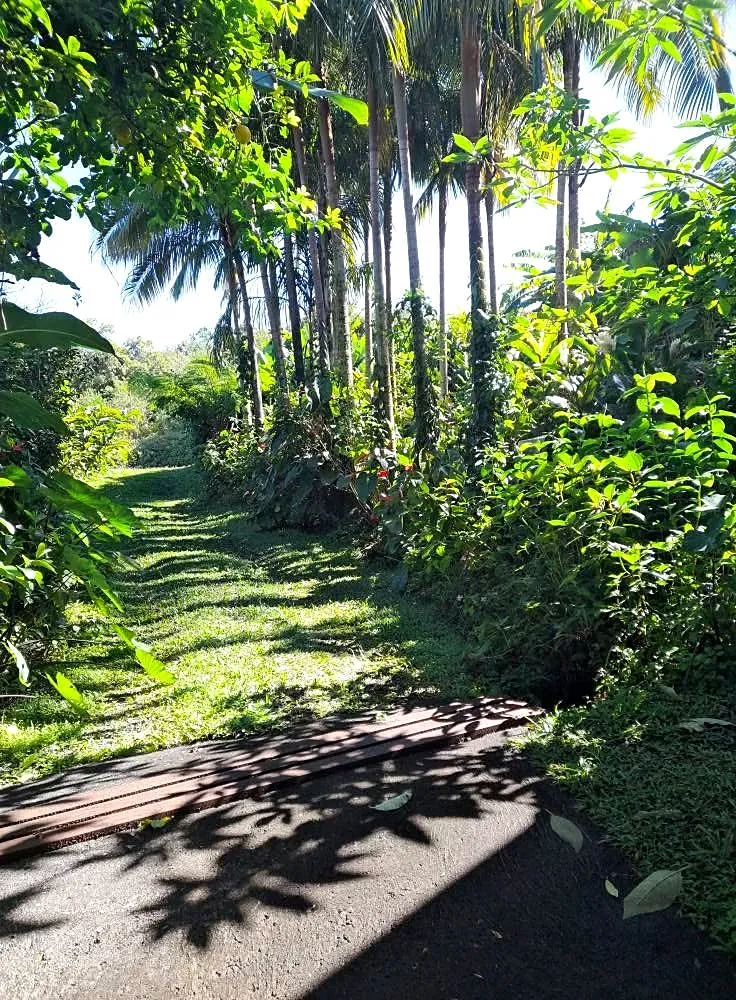
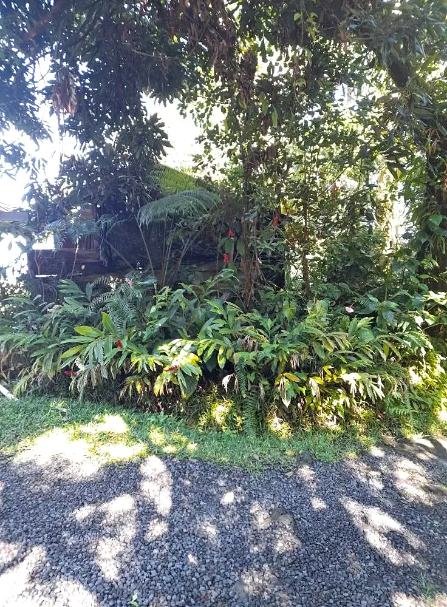
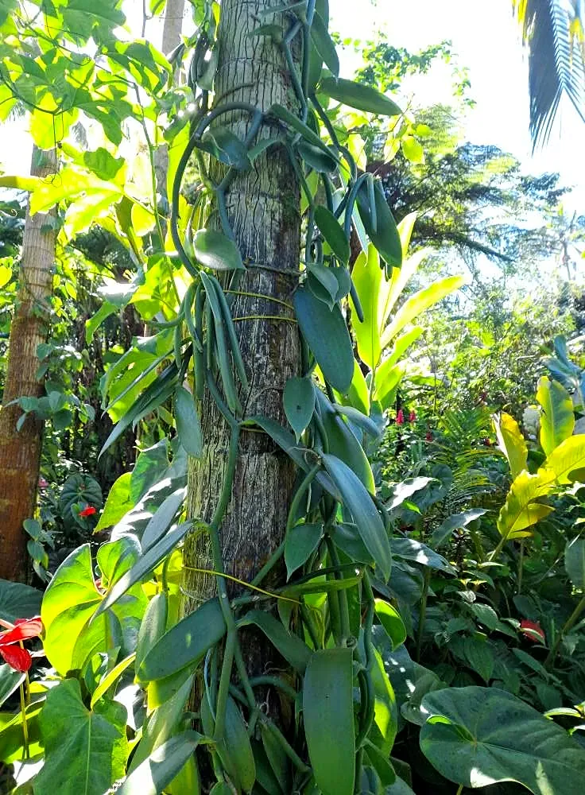
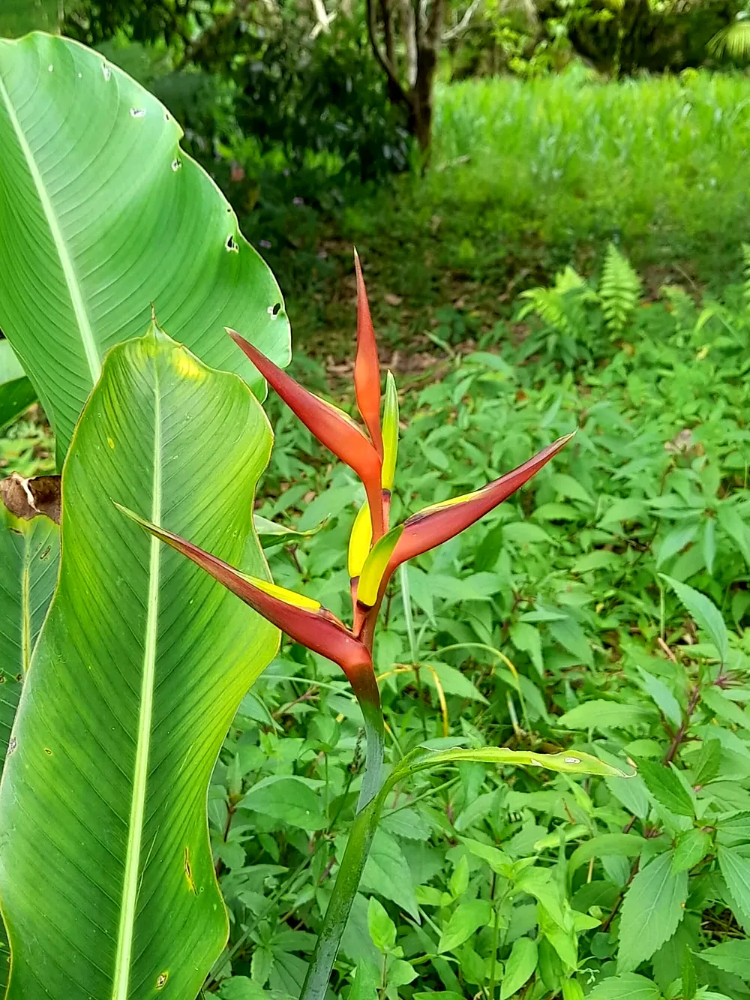
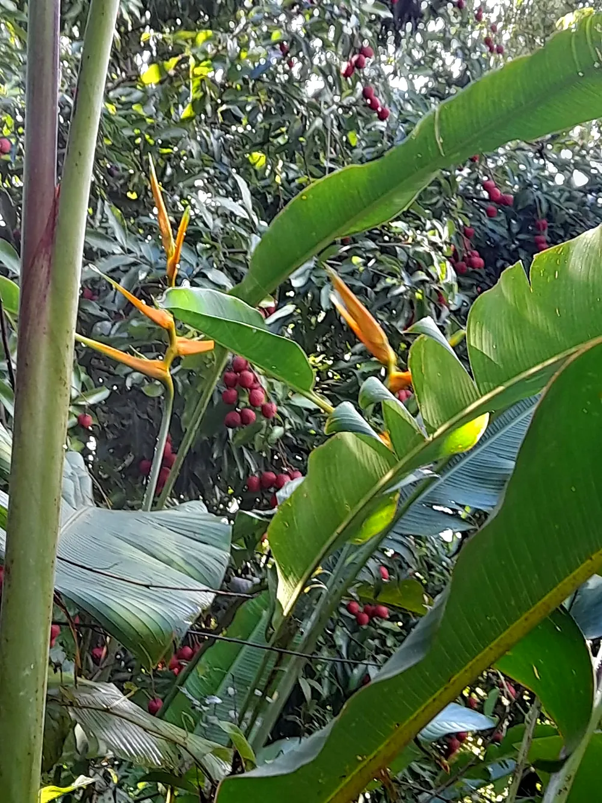
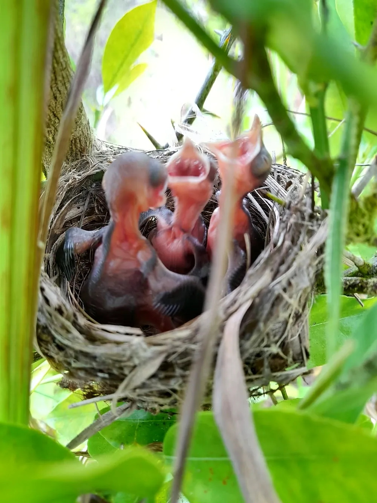
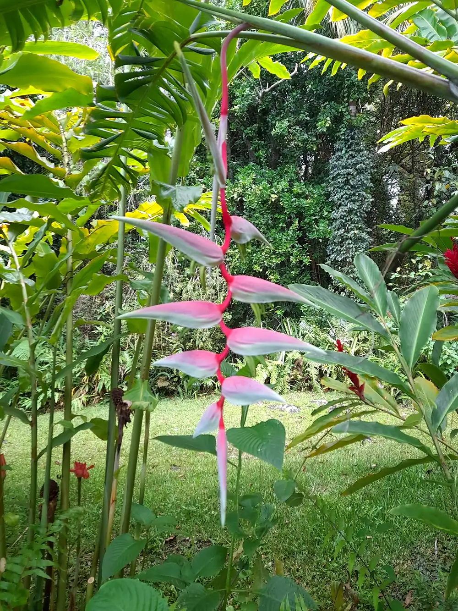

Gîte & table d'hôtes · Forêt de Basse Vallée, Saint-Philippe
Gîte de Théophane & Yoleine
Votre dépaysement assuré au cœur du Sud Sauvage !Un gîte de pleine nature avec vue sur mer, une table créole nourrie par l'exploitation, et la forêt tout autour.
80 route forestière de Basse Vallée, Saint-Philippe · 0692 87 25 43
Le lieu
Un écrin d'authenticité au cœur de la forêt
En plein cœur de la forêt de Basse Vallée, à Saint-Philippe, le gîte vous accueille dans un cadre naturel exceptionnel, propice à la détente et à la déconnexion, avec une vue splendide sur l'océan Indien.
« Une immersion forestière profonde, où la faune et la flore indigènes et endémiques se dévoilent dans un cadre d'antan. »
Votre hôte, Jim, veille sur une propriété de 23 hectares et perpétue le savoir-faire d'une génération de gîteurs, de père en fils. Ici, on vient pour le calme absolu de la forêt.

Séjourner
Une nuit en forêt, en groupe ou en famille
Quatre dortoirs de six places, un vrai point de départ pour les randonneurs, les familles et les groupes amoureux de nature.
Nuit en dortoir & repas
La formule demi-pension : votre lit en dortoir, le dîner créole à la table d'hôtes et le petit déjeuner aux fruits de saison.
Le repas uniquement
Venez simplement partager un repas à la table d'hôtes conviviale, sur réservation.
Un gîte d'étape et de groupe
Idéal pour les groupes : 24 couchages, sanitaires communs, et la forêt endémique à explorer dès le réveil.
Sur réservation : un message à Jim, et votre séjour se prépare.
La table d'hôtes
Les produits de l'exploitation, à votre table
Une cuisine créole traditionnelle, faite maison, avec des recettes emblématiques du Sud Sauvage et les produits de l'exploitation. Avant de passer à table, un petit tour au jardin pour découvrir d'où ils viennent.

La forêt de Basse Vallée
Le jardin, au fil des saisons
Faites glisser →



Photos publiées par le Gîte de Théophane et Yoleine sur sa page Facebook.
« Merci mon ami Patrick jardin des parfums et des épices pour cette nouvelle variété dans mon jardin ! J'en prendrai soin ! »Publication du gîte, 18 novembre 2025 · Illustration : le papangue, l'oiseau qui veille sur le logo du gîte
Venir au gîte
Deux chemins pour rejoindre la forêt
À pied · environ 3 h de marche depuis la route nationale de Basse Vallée par un sentier balisé, ou en fin de journée pour les marcheurs qui reviennent du Volcan.
En voiture · une trentaine de minutes depuis la route nationale, jusqu'au gîte, avec un parking sur place.
Offrir pour Noël
Offrez une parenthèse en forêt
Un repas à la table d'hôtes
La cuisine créole du Sud Sauvage et les produits de l'exploitation, à offrir à ceux que vous aimez.
Une nuit au gîte
Une soirée en demi-pension au cœur de la forêt de Basse Vallée : le cadeau des amoureux de randonnée.
Une grande tablée entre amis
Jusqu'à 30 convives réunis autour de la table, pour fêter la fin d'année en pleine nature.
Écrivez à Jim pour préparer votre cadeau, en toute simplicité.
Offrir sur WhatsAppRéserver
Préparez votre venue au gîte
Adresse · 80 route forestière de Basse Vallée, 97442 Saint-Philippe
Téléphone · 0692 87 25 43
E-mail · jimpaul.begue@gmail.com
Formules · demi-pension en dortoir ou repas, sur réservation
